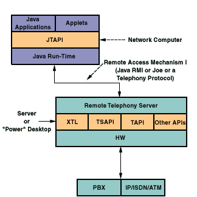
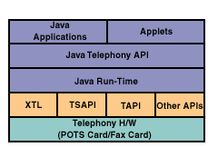
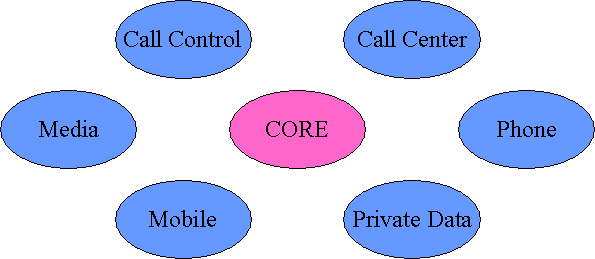
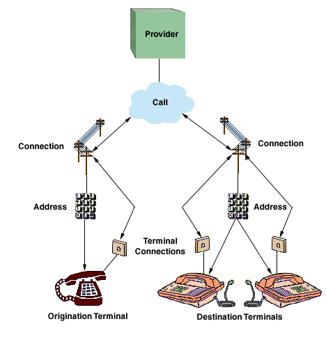
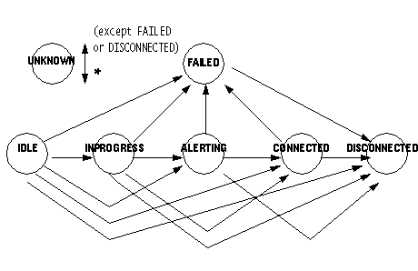
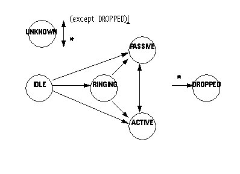
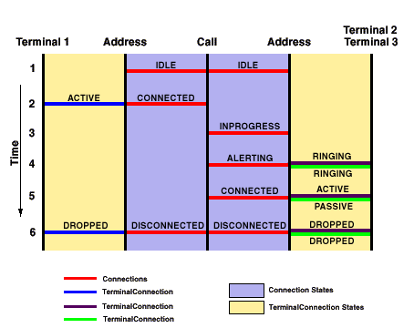

The Java Telephony API (JTAPI) is a portable, object-oriented application programming interface for Java-based computer-telephony applications.
JTAPI serves a broad audience, from call center application developers to web page designers. JTAPI supports both first- and third-party telephony application domains. The API is designed to make programming simple applications easy, while providing those features necessary for advanced telephony applications.
The Java Telephony API is, in fact, a set of API's. The "core" API provides the basic call model and rudimentary telephony features, such as placing telephone calls and answering telephone calls. The core API is surrounded by standard extension APIs providing functionality for specific telephony domains, such as call centers and media stream access. The JTAPI core and extension package architectures are described later in this document.
Applications written using the Java Telephony API are portable across the various computer platforms and telephone systems. Implementations of JTAPI will be available for existing computer-telephony integration platforms such as Sun Microsystem's SunXTLTM, Microsoft and Intel's TAPI, Novell and Avaya's TSAPI, and IBM's CallPath. Additionally, independent hardware vendors may choose to provide implementations of the Java Telephony API on top of their own proprietary hardware.
This document is organized into the following sections:
| Java Telephony API Features | Describes the features of JTAPI and the principles on which it was designed. |
| Supported Configurations | Summarizes the environments in which JTAPI may be used and the computer and software configurations for which it was designed. |
| Java Telephony Package Architecture | Summarizes how the Java Telephony API is organized into various Java language packages. A brief description accompanies each package along with links to more detailed documentation. |
| The Java Telephony Call Model | Describes how telephone calls and different objects that make up telephone calls are represented in this API. |
| Core Package Methods | Provides a brief summary of the key methods available in the core package which perform the most basic telephony operations, such as placing a telephone call, answering a telephone call, and disconnecting a connection to a telephone call. |
| Connection Object States | Describes the states in which the Connection object can exist. It provides a description of the allowable transitions from each state. |
| TerminalConnection Object States | Describes the states in which the TerminalConnection object can exist. It provides a description of the allowable transitions from each state. |
| Placing a Telephone Call | One of the most common features used in any telephony API is placing a telephone call. This section describes the JTAPI method invocations required to place a telephone call, and examines state changes in the call model. This analysis will explain how calls are placed, answered, and terminated. |
| The Java Telephony Event Delivery Model | Describes the JTAPI event delivery model - the Listener model (formerly the Observer model). Applications use listeners for asynchronous notification of changes in the state of the JTAPI call model. |
| Application Code Examples | Provides two real-life code examples using the Java Telephony API. One example places a telephone call to a specified telephone number. The other example shows a designated Terminal answering an incoming telephone call. |
| Locating and Obtaining Providers | Describes the manner in which applications create and obtain JTAPI Provider objects. |
| Security | Summarizes the JTAPI security strategy. |
The Java Telephony API specification represents the combined efforts of design teams from Sun Microsystems, Avaya, Nortel, Novell, Intel, and IBM, operating under the direction of JavaSoft on versions 1.0 and 1.1, and teams from Sun Microsystems, Avaya, Nortel, IBM, Siemens, and Dialogic, working within the Enterprise Computer Telephony Forum on version 1.2.
Major contributors to the ECTF experts group for release 1.3 were Nortel, Dialogic, Nokia, Avaya and IBM; major contributors to release 1.4 effort were Avaya, Dialogic, IBM, Netergy Networks, Pingtel and OpenComm do Brasil Ltda.
The Java Telephony API version 1.0 specification was released to the public on November 1, 1996. Version 1.1 was released to the public on February 1, 1997; version 1.2 was released to the public in December 1997; version 1.3 was released for early access on April 7, 1999., and its final public release was on July 23, 1999; version 1.4 was released for public review on June 18, 2001, and the final release is expected in Sept of 2001.
| Release | Early Release Date | Final Public Release Date |
|---|---|---|
| 1.0 | November 1 1996 | |
| 1.1 | February 1, 1997 | |
| 1.2 | December 1997 | |
| 1.3 | April 7, 1999 | July 23, 1999 |
| 1.4 | June 18, 2001 | Sept 18, 2001 |
The features and guiding design principles for the Java Telephony API are:
JTAPI runs on a variety of system configurations, including centralized servers with direct access to telephony resources, and remote network computers with access to telephony resources over a network. In the first configuration, a network computer is running the JTAPI application and is accessing telephony resources over a network, as illustrated in Figure 1. In the second configuration, the application is running on a computer with its own telephony resources, as illustrated in Figure 2.
In a network configuration, the JTAPI application or Java applet runs on a remote workstation. This workstation can be a network computer with only a display, keyboard, processor, and some memory. It accesses network resources, making use of a centralized server that manages telephony resources. JTAPI communicates with this server via a remote communication mechanism, such as Java's Remote Method Invocation (RMI) or a telephony protocol. The following diagram shows this configuration.

Figure 1: Network Configuration
In a desktop configuration, the JTAPI application or Java applet runs on the same workstation that houses the telephony resources. The following diagram shows the desktop configuration.

Figure 2: Desktop Configuration
The Java Telephony API is composed of a set of Java language packages. Each package provides a specific piece of functionality for a certain aspect of computer-telephony applications. Implementations of telephony servers choose the packages they support, depending upon the capabilities of their underlying platform and hardware. Applications may query for the packages supported by the implementation they are currently using. Additionally, application developers may concern themselves with only the supported packages applications need to accomplish a task. The diagram below depicts the architecture of the JTAPI packages.

Figure 3: Core/Extension Package Relationship
At the center of the Java Telephony API is the "core" package. The core package provides the basic framework to model telephone calls and rudimentary telephony features. These features include placing a telephone call, answering a telephone call, and disconnecting a connection to a telephone call. Simple telephony applications will only need to use the core to accomplish their tasks, and do not need to concern themselves with the details of other packages. For example, the core package permits applet designers to add telephone capabilities to a Web page with ease.
A number of "standard extension" packages extend the JTAPI core package . These extension packages each bring additional telephony functionality to the API. Currently, the following extension packages exist for this API: call control, call center, media, phone, private data, and capabilities packages. Each package is summarized below in terms of the features it brings to JTAPI, and is linked to a separate overview document and specifications.
The JTAPI package architecture is a two-way street for both implementations and applications. In other words, telephony server implementations choose which extension packages (in addition to the core package) they implement, based upon the capabilities of the underlying hardware. Applications choose the extension packages (in addition to the core package) they need to use to accomplish the desired tasks of the application. Applications may query the implementation for the extension packages the implementation supports, and the application developer does not need to concern himself/herself with the details of any packages not needed for the application.
Each JTAPI extension package has its own specification describing its extensions to the core API, and in most cases has its own separate overview document describing it. The chart below lists each extension package available, with a link to the individual overview document, if it exists.
| Call Control Package | The javax.telephony.callcontrol package extends the core package by providing more advanced call-control features such as placing calls on hold, transferring telephone calls, and conferencing telephone calls. This package also provides a more detailed state model of telephone calls. |
| Call Center Package | The javax.telephony.callcenter package provides applications the ability to perform advanced features necessary for managing large call centers. Examples of these advanced features include: Routing, Automated Call Distribution (ACD), Predictive Calling, and associating application data with telephony objects. |
| Media Package | The javax.telephony.media Package enables applications to manipulate the content of the media streams associated with a telephone call. Applications can easily generate and detect DTMF (and other) tones, play and record prompts and messages, even use Automatic Speech Recognition (ASR) and Text-to-Speech technologies. |
| Phone Package | The javax.telephony.phone package permits applications to control the physical features of telephone hardware phone sets. Implementations may describe Terminals as collections of components, where each of these component-types has interfaces in this package. |
| Capabilities Package | The javax.telephony.capabilities package allows applications to query whether certain actions may be performed. Capabilities take two forms: static capabilities indicate whether an implementation supports a feature; dynamic capabilities indicate whether a certain action is allowable given the current state of the call model. |
| Private Data Package | The javax.telephony.privatedata package enables applications to communicate data directly with the underlying hardware switch. This data may be used to instruct the switch to perform a switch-specific action. Applications may also use the package to "piggy-back" a piece of data with a Java Telephony API object. |
The JTAPI call model consists of a half-dozen Java objects. These objects are defined using Java interfaces in the core package. Each call model object represents either a physical or logical entity in the telephone world. The primary purpose of these call model objects is to describe telephone calls and the endpoints involved in a telephone call. These call model objects are related to one another in specific ways, which are summarized below and described in more detail in the core package specification.
The following diagram shows the JTAPI call model and the objects that compose the call model. A description of each object follow the diagram.

Figure 4: JTAPI Call Model
The Provider object is an abstraction of telephony service-provider software. The provider might manage a PBX connected to a server, a telephony/fax card in a desktop machine, or a computer networking technology, such as IP. A Provider hides the service-specific aspects of the telephony subsystem and enables Java applications and applets to interact with the telephony subsystem in a device-independent manner.
The Call object represents a telephone call, the information flowing between the service provider and the call participants. A telephone call comprises a Call object and zero or more connections. In a two-party call scenario, a telephone call has one Call object and two connections. A conference call is three or more connections associated with one Call object.
The Address object represents a telephone number. It is an abstraction for the logical endpoint of a telephone call. Note that this is quite distinct from a physical endpoint. In fact, one address may correspond to several physical endpoints (i.e. Terminals)
A Connection object models the communication link between a Call object and an Address object. This relationship is also referred to as a "logical" view, because it is concerned with the relationship between the Call and the Address (i.e. a logical endpoint). Connection objects may be in one of several states, indicating the current state of the relationship between the Call and the Address. These Connection states are summarized later.
The Terminal object represents a physical device such as a telephone and its associated properties. Each Terminal object may have one or more Address Objects (telephone numbers) associated with it, as in the case of some office phones capable of managing multiple call appearances. The Terminal is also known as the "physical" endpoint of a call, because it corresponds to a physical piece of hardware.
TerminalConnection objects model the relationship between a Connection and the physical endpoint of a Call, which is represented by the Terminal object. This relationship is also known as the "physical" view of the Connection (in contrast to the Connection, which models the logical view). The TerminalConnection describes the current state of relationship between the Connection and a particular Terminal. The states associated with the TerminalConnection are described later in this document.
The core package defines three methods to support its primary features: placing a telephone call, answering a telephone call, and disconnecting a connection to a telephone call. These methods are Call.connect(), TerminalConnection.answer(), and Connection.disconnect(), respectively.
Once an application has an idle call object (obtained via Provider.createCall()), it may place a telephone call using the Call.connect() method. The application must specify the originating Terminal (physical endpoint) and the originating Address (logical endpoint) on that Terminal (in the case that a Terminal has multiple telephone numbers on it). It also provides the destination telephone number string. Two Connection objects are returned from the Call.connect() method, representing the originating and destination ends of the telephone call.
Applications monitor with listeners (discussed later) on Terminals for when incoming calls are presented. An incoming telephone call to a Terminal is indicated by a TerminalConnection to that Terminal in the RINGING state (see TerminalConnection states below). At that time, applications may invoke the TerminalConnection.answer() to answer that incoming telephone call.
The Connection.disconnect() method is used to remove an Address from the telephone call. The Connection object represents the relationship of that Address to the telephone call. Applications typically invoke this method when the Connection is in the CONNECTED state, resulting in the Connection moving to the DISCONNECTED state. In the core package, application may only remove entire Addresses from the Call, and all of the Terminals associated with that Address which are part of the call are removed as well. The call control extension package provides the ability for application to remove individual Terminals only from the Call.
A Connection object is always in a state that reflects the relationship between a Call and an Address. The state in which a Connection exists is not only important to the application for information purposes, it is always an indication of which methods and actions can be invoked on the Connection object.
The state changes which Connection objects undergo are governed by rules shown below in a state transition diagram. This diagram guarantees to application developers the possible states in which the Connection object can transition given some current state. These state transition rules are invaluable to application developers. The diagram below shows the possible state transitions for the Connection object. Following this diagram is a brief summary of the meaning of each state.

Figure 5: Connection State Transitions
The IDLE state is the initial state for all new Connection objects. Connections typically transition quickly out of the IDLE state into another state. A Connection in the IDLE state indicates that the party has just joined the telephone call in some form. No Core methods are valid on Connections in the IDLE state.
The INPROGRESS state indicates that a telephone call is currently being placed to this destination endpoint.
The ALERTING state indicates that the destination party of a telephone call is being alerted to an incoming telephone call.
The CONNECTED state indicates that a party is actively part of a telephone call. A Connection in the CONNECTED state implies that the associated party is talking to the other parties on the call or is connected to tone.
The DISCONNECTED state indicates that a party is no longer a part of a telephone call. No methods are valid for Connections in the DISCONNECTED state.
The FAILED state indicates that a telephone call placed to the endpoint has failed. For example, if an application uses Call.connect() to place a telephone call to a party who is busy, the Connection associated with the called party transitions into the FAILED state.
The UNKNOWN state indicates that the Provider cannot determine the state of the Connection at the present time. A Connection may transition in and out of the UNKNOWN state at any time, unless it is in either the DISCONNECTED or FAILED state. The effects of the invocation of any method on a Connection in this state are unpredictable.
The TerminalConnection object represents the relationship between a Terminal and a Connection. As mentioned previously, these objects represent a physical view of the Call, describing which physical Terminal endpoints are part of the telephone call. Similar to Connection objects, TerminalConnection objects have their own set of states and state transition diagram. This state transition diagram, with a brief description of each state follows.

Figure 6: TerminalConnection state transitions
The IDLE state is the initial state for all TerminalConnection objects. It has the same connotation for the Connection object's IDLE state.
The ACTIVE state indicates a Terminal is actively part of a telephone call. This often implies that the Terminal handset is off-hook.
The RINGING state indicates that a Terminal is signaling to a user that an incoming telephone call is present at the Terminal.
The DROPPED state indicates that a Terminal was once part of a telephone call, but has since dropped off of that telephone call. The DROPPED state is the final state for all TerminalConnections.
The PASSIVE state indicates a Terminal is part of a telephone call, but not actively so. A TerminalConnection in the PASSIVE state indicates that a resource on the Terminal is being used by this telephone call. Packages providing advanced features permit Terminals to join calls from the PASSIVE state.
The UNKNOWN state indicates that the Provider is unable to determine the current state of a TerminalConnection. It has a similar connotation to that of the Connection object's UNKNOWN state.
The past several sections have outlines the JTAPI call model, the essential methods in the core package, and the Connection and TerminalConnection states. This section ties all of this information together, presenting a common scenario found in most telephony applications. This section describes the state changes the entire call model typically undergoes when an application places a simple telephone call. Readers will come away with a coherent understanding of the call model changes for this simple example.
The vehicle used to describe the state changes undergone by the call model is the diagram below. This diagram is a call model timing diagram, where changes in the various objects are depicted as times increases down the vertical axis. Such a diagram is given below describing the typical state changes after an application invokes the Call.connect() method.

Figure 7: Call Model timing diagram
In the diagram above, discrete time steps are denoted by integers down the vertical axis. Time increases down this axis,but the integers are not meant to indicate real (clock) time.
This diagram, as a whole, represents a single telephone Call. In this case, the diagram represents a two-party telephone call (The Call.connect() method always results in a two-party call). The diagram may be broken into two parts: the left half and the right half. The left half represents the originating-end of the telephone call and the right half represents the destination-end of the telephone call.
On the left-hand (originating) side of the diagram, the two vertical lines represent the originating Terminal and Address (which are arguments to the Call.connect() method) objects, as indicated on the diagram. The horizontal lines represent either Connection objects or TerminalConnection objects as marked. Note that the Connection objects are drawn in the inner- most regions, whereas the TerminalConnection objects are drawn in the outer- most regions.
Similarly, on the right-hand (destination) side of the diagram, the two vertical lines represent the destination Address and Terminals. In this example, there are two destination Terminals associated with the destination Address. This configuration has been depicted previously in Figure 4. Note that since there are two Terminals, there are two TerminalConnection objects on the destination side.
This diagram can be read as follows: as time passes the Connection and TerminalConnection objects change states. The appearance of a new Connection or TerminalConnection horizontal line corresponds to a new object of that type being created.
In the example of placing a telephone call, we see that after the two Connections are created in the IDLE state, the originating Connection transitions to the CONNECTED state, while the destination Connection transitions to the INPROGRESS state. At that time, a TerminalConnection to the originating Terminal is created and transitions to the ACTIVE state. When the destination Connection transitions to the ALERTING state, two TerminalConnections are created in the RINGING state.
At this point, a person at one of the destination Terminals answers the call. When this happens, that TerminalConnection moves to the ACTIVE state, and the other TerminalConnection moves to the PASSIVE state. At the same time, the destination Connection concurrently moves to the CONNECTED state. When the telephone call ends, all Connections move to the DISCONNECTED state, and all TerminalConnections move to the DROPPED state.
As a final point, this document has used the terms "logical" and "physical" view of a telephone call. This diagram makes these concepts clear. An application can monitor the state changes of the Connection object (i.e. the logical view). By looking at the diagram, the reader can understand that these states provide a higher-level view of the progress of the telephone call. The TerminalConnection state changes represent the physical view. By monitoring the TerminalConnection state changes, applications can find out what is happening at each physical endpoint.
The Java Telephony API asynchronously notifies applications of various changes in the JTAPI call model. These changes may include the state change of an object or the creation of an object.
Prior to JTAPI release 1.3, the Java observer/observable model was the pattern that JTAPI applications could follow to receive events from a JTAPI implementation using the JTAPI API.
With JTAPI releases 1.3 (packages Core, Media, Mobile) and 1.4 (packages Callcontrol, Callcenter, Phone, Private), applications could transition to using an event delivery scheme based in spirit on the Java 1.1 delegation-based event model (or "Listener model"). JTAPI releases 1.3 and 1.4 also include the Observer methods and events, but deprecate them.
An application defines an object which implements all the methods defined in a particular Listener interface; then the application may present that object as a Listener for that interface.
The JTAPI Listener model defines Listener interfaces.
It goes further to define JTAPI events, extended from
javax.telephony.Event,
representing a family of JTAPI call model changes.
Finally each specific JTAPI call model change is indicated by
a specific event ID (returned by the Event.getID method).
For example,
an object implementing the
javax.telephony.CallListener
interface may expect a
javax.telephony.CallEvent
to carry one of the following
event IDs:
javax.telephony.CallEvent.CALL_VALID
(or just CALL_VALID),
CALL_INVALID or
EVENT_TRANSMISSION_ENDED.
Each of these event IDs indicate the specific call model change which occurred.
A Listener interface defines a set of methods which the application object must implement. One method is defined in the interface for each event plus event ID that may be reported to the application object.
The Provider, Call, Terminal, and Address objects have Listeners. The interfaces corresponding to these listeners are ProviderListener, CallListener, TerminalListener, and AddressListener, respectively.
The ProviderListener reports all state changes to the Provider object. For the core package, state changes are reported when the Provider changes state from OUT_OF_SERVICE, to IN_SERVICE, to SHUTDOWN. Note that an event ID, and a Listener method, is defined for each state change that may be reported by a JTAPI event.
The Call listener reports state change information for all Connections and TerminalConnections that are part of the telephone call as well as state changes to the Call itself. These state changes are reported on neither the Address nor the Terminal listeners.
At times, the application may want to monitor Address or Terminal objects for incoming telephone calls. In these instances, the application uses the Address.addCallListener() or the Terminal.addCallListener() methods. These methods instruct the implementation to automatically add a CallListener to any calls that come to an Address or Terminal. These CallListeners are removed once the call leaves the Address or Terminal.
The Address and Terminal listeners report any state changes in these objects. In the core package there are no events for these objects. The AddressListener and TerminalListener interfaces still exist, however, so other packages may extend these interfaces.
This section presents two application code examples. The first places a telephone call, and the second answers an incoming telephone call to a Terminal.
Note that the outgoing application code example does not make any blocking JTAPI calls in listener code - it only examines the evlist it receives as a parameter - while the incoming call application code uses "inner classes", defined in JDKTM 1.1, to avoid making blocking JTAPI calls in Listener code.
The following code example places a telephone call using the core Call.connect() method. It, however, looks for the states provided by the Call Control package.
import javax.telephony.*;
import javax.telephony.events.*;
/*
* The MyOutCallObserver class implements the CallObserver
* interface and receives all events associated with the Call.
*/
public class MyOutCallObserver implements CallObserver {
public void callChangedEvent(CallEv[] evlist) {
for (int i = 0; i < evlist.length; i++) {
if (evlist[i] instanceof ConnEv) {
String name = null;
try {
Connection connection = ((ConnEv)evlist[i]).getConnection();
Address addr = connection.getAddress();
name = addr.getName();
} catch (Exception excp) {
// Handle Exceptions
}
String msg = "Connection to Address: " + name + " is ";
if (evlist[i].getID() == ConnAlertingEv.ID) {
System.out.println(msg + "ALERTING");
}
else if (evlist[i].getID() == ConnInProgressEv.ID) {
System.out.println(msg + "INPROGRESS");
}
else if (evlist[i].getID() == ConnConnectedEv.ID) {
System.out.println(msg + "CONNECTED");
}
else if (evlist[i].getID() == ConnDisconnectedEv.ID) {
System.out.println(msg + "DISCONNECTED");
}
}
}
}
}
------------------------------------------------------
import javax.telephony.*;
import javax.telephony.events.*;
import MyOutCallObserver;
/*
* Places a telephone call from 476111 to 5551212
*/
public class Outcall {
public static final void main(String args[]) {
/*
* Create a provider by first obtaining the default implementation of
* JTAPI and then the default provider of that implementation.
*/
Provider myprovider = null;
try {
JtapiPeer peer = JtapiPeerFactory.getJtapiPeer(null);
myprovider = peer.getProvider(null);
} catch (Exception excp) {
System.out.println("Can't get Provider: " + excp.toString());
System.exit(0);
}
/*
* We need to get the appropriate objects associated with the
* originating side of the telephone call. We ask the Address for a list
* of Terminals on it and arbitrarily choose one.
*/
Address origaddr = null;
Terminal origterm = null;
try {
origaddr = myprovider.getAddress("4761111");
/* Just get some Terminal on this Address */
Terminal[] terminals = origaddr.getTerminals();
if (terminals == null) {
System.out.println("No Terminals on Address.");
System.exit(0);
}
origterm = terminals[0];
} catch (Exception excp) {
// Handle exceptions;
}
/*
* Create the telephone call object and add an observer.
*/
Call mycall = null;
try {
mycall = myprovider.createCall();
mycall.addObserver(new MyOutCallObserver());
} catch (Exception excp) {
// Handle exceptions
}
/*
* Place the telephone call.
*/
try {
Connection c[] = mycall.connect(origterm, origaddr, "5551212");
} catch (Exception excp) {
// Handle all Exceptions
}
}
}
The following code example illustrates how an application answers a Call at a particular Terminal. It shows how applications accept calls when (and if) offered. This code example greatly resembles the core InCall code example.
import javax.telephony.*;
import javax.telephony.events.*;
import javax.telephony.*;
import javax.telephony.events.*;
/*
* The MyInCallObserver class implements the CallObserver and
* recieves all Call-related events.
*/
public class MyInCallObserver implements CallObserver {
public void callChangedEvent(CallEv[] evlist) {
TerminalConnection termconn;
String name;
for (int i = 0; i < evlist.length; i++) {
if (evlist[i] instanceof TermConnEv) {
termconn = null;
name = null;
try {
TermConnEv tcev = (TermConnEv)evlist[i];
Terminal term = termconn.getTerminal();
termconn = tcev.getTerminalConnection();
name = term.getName();
} catch (Exception excp) {
// Handle exceptions.
}
String msg = "TerminalConnection to Terminal: " + name + " is ";
if (evlist[i].getID() == TermConnActiveEv.ID) {
System.out.println(msg + "ACTIVE");
}
else if (evlist[i].getID() == TermConnRingingEv.ID) {
System.out.println(msg + "RINGING");
/* Answer the telephone Call using "inner class" thread */
try {
final TerminalConnection _tc = termconn;
Runnable r = new Runnable() {
public void run(){
try{
_tc.answer();
} catch (Exception excp){
// handle answer exceptions
}
};
};
Thread T = new Thread(r);
T.start();
} catch (Exception excp) {
// Handle Exceptions;
}
} else if (evlist[i].getID() == TermConnDroppedEv.ID) {
System.out.println(msg + "DROPPED");
}
}
}
}
}
----------------------------------------------------
import javax.telephony.*;
import javax.telephony.events.*;
import MyInCallObserver;
/*
* Create a provider and monitor a particular terminal for an incoming call.
*/
public class Incall {
public static final void main(String args[]) {
/*
* Create a provider by first obtaining the default implementation of
* JTAPI and then the default provider of that implementation.
*/
Provider myprovider = null;
try {
JtapiPeer peer = JtapiPeerFactory.getJtapiPeer(null);
myprovider = peer.getProvider(null);
} catch (Exception excp) {
System.out.println("Can't get Provider: " + excp.toString());
System.exit(0);
}
/*
* Get the terminal we wish to monitor and add a call observer to that
* Terminal. This will place a call observer on all call which come to
* that terminal. We are assuming that Terminals are named after some
* primary telephone number on them.
*/
try {
Terminal terminal = myprovider.getTerminal("4761111");
terminal.addCallObserver(new MyInCallObserver());
} catch (Exception excp) {
System.out.println("Can't get Terminal: " + excp.toString());
System.exit(0);
}
}
}
The Java Telephony API defines a convention by which telephony server implementations of JTAPI make their services available to applications.
The two elements that link an application to a server are:
The JtapiPeerFactory class is the first point of contact for an application that needs telephony services. It has the ability to return a named JtapiPeer object or a default JtapiPeer object. It is defined as a static class.
The JtapiPeer interface is the basis for a vendor's particular implementation of the Java Telephony API. Each vendor that provides an implementation of JTAPI must implement this interface in a class that can be loaded by the JtapiPeerFactory.
It is through a class that implements the JtapiPeer object that an application gets a Provider object.
The JtapiPeerFactory is a static class defined in JTAPI. Its sole public method, getJtapiPeer() gets the JtapiPeer implementation requested or it returns a default implementation.
getJtapiPeer() takes the name of the desired JTAPI server implementation class as a parameter to return an object instance of that class. If no name is provided, getJtapiPeer() returns the default JTAPI server implementation object.
JtapiPeer is an interface. It is used by the JTAPI server implementors. It defines the methods that applications use to get Provider objects, to query services available on those providers, and to get the name of the JtapiPeer object instance. By creating a class that implements the JtapiPeer interface, JTAPI implementations make the following methods available to applications.
Applications use the JtapiPeer.getProvider() method to obtain new Provider objects. Each implementation may support one or more different "services" (e.g. for different types of underlying network substrate). A list of available services can be obtained via the JtapiPeer.getServices() method.
Applications may also supply optional arguments to the Provider. These arguments are appended to the string argument passed to the JtapiPeer.getProvider() method. The string argument has the following format:
< service name > ; arg1 = val1; arg2 = val2; ...
Where < service name > is not optional, and each optional argument pair which follows is separated by a semi-colon. The keys for these arguments are implementation specific, except for two standard-defined keys:
Applications use the JtapiPeer.getName() method to get the name of this JtapiPeer object instance. It has a name parameter, which is the same name used as an argument to the JtapiPeerFactory.getJtapiPeer() method.
JTAPI peer implementations use the Java "sandbox" model for controlling access to sensitive operations. Callers of JTAPI methods are categorized as "trusted" or "untrusted", using criteria determined by the runtime system. Trusted callers are allowed full access to JTAPI functionality. Untrusted callers are limited to operations that cannot compromise the system's integrity.
JTAPI may be used to access telephony servers or implementations that provide their own security mechanisms. These mechanisms remain in place; parameters such as user name and password are provided through parameters on the JtapiPeer.getProvider() method.